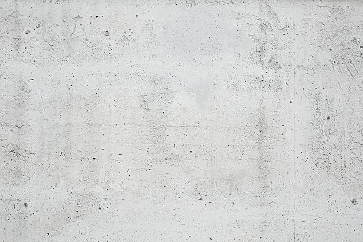
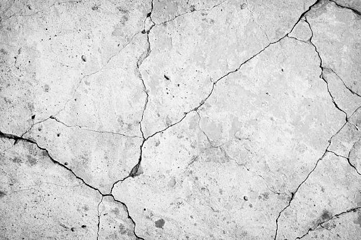

Louisville Kentucky
info@hudsonconcretecontractors.xyz
Louisville Kentucky
info@hudsonconcretecontractors.xyz

Premier concrete company in Louisville Kentucky offering comprehensive solutions for all concrete needs. Expert installation, repair, and maintenance with a focus on durability and aesthetic appeal. Contact us today!
Click Here To Call Us (877) 848-1711Looking for a reliable concrete company in Louisville Kentucky ? Our expert team specializes in delivering top-notch concrete solutions for residential, commercial, and industrial projects. Whether you're planning a new driveway, patio, or commercial foundation, we have the skills and experience to ensure your project is completed with the highest standards of quality and durability.
Why Choose Us for Your Concrete Needs in Louisville Kentucky ?
At Hudson Concrete Contractors, we pride ourselves on being the go-to concrete contractor in Louisville Kentucky . Our reputation is built on:
Experienced Professionals: Our team has years of experience in the concrete industry, ensuring precise and efficient workmanship.
High-Quality Materials: We use only the best materials, ensuring that your concrete structures are built to last.
Customized Solutions: Every project is unique, and we tailor our services to meet your specific needs and budget.
Timely Completion: We understand the importance of deadlines, and we strive to complete every project on time, without compromising on quality.
Our Concrete Services in Louisville Kentucky
We offer a wide range of concrete services, including:
Concrete Driveways: Durable and aesthetically pleasing driveways that stand the test of time.
Stamped Concrete: Add a decorative touch to your property with our custom stamped concrete designs.
Concrete Foundations: Strong and stable foundations for both residential and commercial properties.
Patios and Walkways: Beautiful outdoor spaces designed for comfort and style.
Concrete Repairs: Quick and reliable repairs to restore the integrity of your concrete surfaces.
Contact Us Today for a Free Estimate!
If you're in Louisville Kentucky and need professional concrete services, look no further. Contact us today to discuss your project and get a free, no-obligation estimate. Trust Hudson Concrete Contractors to bring your concrete vision to life!
Residential & commercial Hudson Concrete Contractors
Quality services at affordable prices
Immediate 24/ 7 emergency services


Cracks in concrete surfaces are a common concern for homeowners in Louisville Kentucky but understanding their causes can help you prevent and address these issues effectively. At Hudson Concrete Contractors, we specialize in diagnosing and repairing concrete problems to ensure your surfaces remain durable and aesthetically pleasing.
Shrinkage During Curing
One of the primary causes of cracks is shrinkage during the curing process. As concrete dries and sets, it naturally contracts. If the concrete is not properly mixed or cured, this shrinkage can lead to surface cracks. Ensuring adequate curing and using appropriate mix ratios can minimize this risk.
Temperature Fluctuations
Concrete is sensitive to temperature changes. Extreme heat or cold can cause the concrete to expand or contract, leading to cracking. To mitigate this, it's important to pour concrete under optimal weather conditions and use expansion joints to accommodate movement.
Soil Movement and Settlement
Uneven soil settlement beneath a concrete slab can cause it to shift and crack. Issues such as poor compaction or soil erosion can lead to instability. Proper site preparation and soil compaction before pouring concrete are crucial to preventing such problems.
Heavy Loads and Structural Stress
Excessive weight or pressure on concrete surfaces can lead to cracking. For instance, parking heavy vehicles on a driveway or placing heavy equipment on a slab can exceed its load-bearing capacity. Designing concrete surfaces to handle expected loads and avoiding overloading are key to preventing damage.
Water Damage and Erosion
Water infiltration can weaken concrete and lead to cracks. Moisture can cause the concrete to expand and contract, or lead to erosion of the underlying soil. Applying sealers and ensuring proper drainage can help protect your concrete surfaces from water-related damage.
At Hudson Concrete Contractors, we offer expert solutions to address and repair cracks in concrete surfaces in Louisville Kentucky . Contact us today for professional advice and top-quality concrete services to maintain the integrity and beauty of your concrete investments.
Residential & commercial Hudson Concrete Contractors
Quality services at affordable prices
Immediate 24/ 7 emergency services
If you’re searching for trustworthy cement contractors near you, look no further than Hudson Concrete Contractors. We have built a strong reputation in Louisville Kentucky for providing top-quality cement services, tailored to meet your specific needs. Our team of experienced contractors has the expertise and tools to handle projects of any size effectively. We prioritize durability, efficiency, and excellent customer service at every step. With us, you can expect a seamless process from start to finish, ensuring your satisfaction with our cement solutions.

Just because you’re on a budget doesn’t mean you have to sacrifice quality. Our affordable concrete services in Louisville Kentucky provide you with cost-effective solutions that don’t compromise on durability or aesthetics. We believe that high-quality concrete work should be accessible to everyone, which is why we offer competitive pricing without cutting corners. Our experienced team is committed to delivering excellent results that make your investment worthwhile. Opt for our affordable concrete services and see how we can effectively turn your visions into reality without breaking the bank.

Protecting your concrete surfaces is essential for longevity and maintenance. Our concrete sealing services provide an effective barrier against moisture, stains, and environmental factors that can deteriorate your concrete. We use high-quality sealers designed to extend the life of your concrete surfaces while enhancing their appearance. Our experienced team ensures that every application is performed with precision and care, providing you with a protective solution that stands the test of time. Trust us to keep your concrete looking and performing its best with our specialized sealing services.

Uneven concrete surfaces can pose safety hazards and detract from the appearance of your property. Our concrete leveling services can help restore stability and efficiency to your surfaces. We utilize advanced techniques, including mudjacking and polyjacking, to lift and level your concrete quickly and effectively. Our skilled team thoroughly assesses the situation and executes the best solution to ensure your concrete is even and safe. Trust us for your concrete leveling needs and bring back the functionality of your spaces.

A solid foundation is the basis of any structure. Our concrete foundation installation services in Louisville Kentucky are designed to create a stable base for your home or business. We prioritize safety and quality, ensuring that every foundation we build will support your property for years to come. Our skilled team works closely with you to understand your project requirements and provides turnkey solutions tailored to your needs. Choose Hudson Concrete Contractors for reliable and sturdy foundation installations that stand the test of time.
If you want to enhance the aesthetic appeal of your concrete surfaces, our concrete staining services in Louisville Kentucky are the perfect solution. We offer a variety of colorful options to customize your concrete, providing a rich, vibrant appearance that mimics natural stone. Our skilled professionals use high-quality stains and techniques to achieve a seamless and beautiful finish for patios, floors, and more. Concrete staining is not only visually appealing but also adds a layer of protection to your surfaces. Trust us to transform your concrete into a stunning centerpiece of your property.

There are many concrete construction companies but we stand out by offering superior craftsmanship and comprehensive services. Whether you need decorative concrete, foundations, or resurfacing services, our experienced team has the expertise to deliver exceptional results. We are dedicated to maintaining open communication and transparency throughout the entire process, ensuring your vision becomes a reality. Choosing us means you receive the highest standards of quality without compromising on service.

For any concrete project, having the right mix is crucial. Our ready mix concrete delivery service ensures that you receive high-quality concrete tailored to your project specifications. We use state-of-the-art equipment to mix concrete to your desired specifications and deliver it promptly to your site. Our delivery team is professional and timely, guaranteeing that your concrete is fresh and ready for immediate use. Choose Hudson Concrete Contractors for reliable and efficient ready mix concrete solutions that support your construction needs.
Years Experience
Expert Technicians
Satisfied Clients
Compleate Projects
At Hudson Concrete Contractors, we take pride in delivering unparalleled concrete services across Louisville Kentucky . Our commitment to excellence sets us apart as the leading choice for both residential and commercial concrete projects in your area.
Why choose Hudson Concrete Contractors? Our team of skilled professionals brings years of experience and a dedication to quality that ensures every project is completed to the highest standards. From meticulous concrete installation to expert repair services, we use only the finest materials and cutting-edge techniques to achieve durable, long-lasting results.
Our customer-centric approach means we prioritize your needs and work closely with you to deliver tailored solutions that fit your specific requirements and budget. Whether you’re upgrading your home’s patio, need a robust foundation for your business, or require urgent repairs, Hudson Concrete Contractors offers reliable and affordable services that guarantee satisfaction.
We understand the importance of timely completion and minimal disruption, which is why we strive to execute each project efficiently while maintaining the highest level of craftsmanship. Our transparent pricing and commitment to customer service ensure that you receive exceptional value and a seamless experience from start to finish.
Choose Hudson Concrete Contractors for your next concrete project in Louisville Kentucky , and experience the difference that expertise, reliability, and quality can make. Contact us today to get started and see why we are the trusted name in concrete services.
When it comes to finding reliable and professional concrete contractors near you, it's essential to choose experts who understand the local landscape, climate, and building codes. Our team of skilled concrete contractors provides top-notch services tailored to meet your unique needs. With years of experience in the industry, we guarantee high-quality workmanship and attention to detail in every project. Whether it's a simple repair or a complete installation, we handle it all with precision and care.
In today's world, ensuring your residential concrete projects are handled by professionals is crucial. Our residential concrete services include everything from driveways and patios to foundations and decorative elements. We pride ourselves on using high-grade materials and the latest techniques to ensure durability and aesthetic appeal. By choosing us, you benefit from our commitment to excellence, timely project completion, and competitive pricing, ensuring that your home's concrete enhancements not only meet but exceed your expectations.
The foundation of any successful commercial venture lies in solid concrete structures. At Hudson Concrete Contractors, our commercial concrete contractors possess the expertise and experience required to tackle projects of all sizes. From warehouses to retail spaces, our team delivers high-quality concrete solutions designed to meet the specific demands of your business. We prioritize safety, efficiency, and timely project completion, ensuring your commercial space is ready as scheduled. Choose us for your commercial concrete projects, and experience the reliability and professionalism that sets us apart .
A concrete driveway is not just a parking space; it’s an essential component of your home’s first impression. Our concrete driveway installation services are designed to provide you with a durable and attractive entryway to your property. We utilize high-grade materials and expert craftsmanship to ensure that your driveway can withstand heavy loads and harsh weather. Our team takes care of every detail, from the initial excavation to the final finishing touches, ensuring that the installation process is seamless and hassle-free for you. Choose us for your driveway installation needs and enjoy a beautiful, long-lasting solution that enhances your home’s value.
Add value and beauty to your outdoor space with our expert concrete patio installation services. We offer a variety of styles, colors, and finishes to create the perfect patio that suits your lifestyle. Our team works diligently to ensure that every installation is seamless and enhances the overall aesthetic of your backyard. Whether you envision a simple outdoor space or a complex design, we are committed to delivering exceptional results tailored to your style. Choose us for concrete patio installation in Louisville Kentucky and let’s create an inviting space for you and your family to enjoy.
Stamped concrete is an ideal solution for those seeking the beauty of natural stone or brick without the high costs. Our stamped concrete services in Louisville Kentucky allow you to customize your concrete surfaces with patterns and colors that enhance your property’s aesthetic. Whether for driveways, patios, or walkways, our team is dedicated to providing meticulous applications that result in stunning surfaces. With our innovative techniques and materials, your stamped concrete will not only look fantastic but also stand up to the elements.
A strong foundation is crucial for the integrity of any structure. If you suspect that your foundation may be compromised, our concrete foundation repair services are here to help. We understand the signs of foundation issues, from cracks and uneven floors to water intrusion, and our expert team knows how to address them effectively. Using advanced techniques and top-quality materials, we provide reliable repairs that restore the stability and safety of your property. When you choose us for your foundation repair project, you gain a committed partner dedicated to ensuring your home remains a safe and secure environment.
The durability and flexibility of concrete slabs make them a popular choice for various applications, including basements, patios, and commercial floors. Our concrete slab installation services are designed to provide a solid and level surface that meets your needs. We work closely with you to determine the right thickness and reinforcement for your specific project, ensuring optimal performance over the long term. Our commitment to quality and customer satisfaction makes us the top choice for concrete slab installations.
Decorative concrete adds flair and style to traditional concrete surfaces. Our decorative concrete services include a wide range of finishes and techniques, such as coloring, staining, and stamping. We work closely with our clients to design surfaces that are not only functional but also enhance the beauty of their spaces. With our attention to detail and commitment to quality, you can trust that your decorative concrete will make a lasting impression.
Over time, concrete surfaces can suffer from wear and tear, leading to unsightly cracks and stains. Our concrete resurfacing services provide an effective solution to rejuvenate and restore your surfaces. Whether it’s your driveway, patio, or flooring, we apply a high-quality resurfacer that covers imperfections and improves the overall appearance. Our team uses advanced techniques to ensure a smooth and durable finish that can withstand the elements. If you want to refresh your concrete surfaces without the cost of complete replacement, choose our trusted resurfacing services.
Damaged concrete can lead to safety hazards and detract from your property’s value. Our concrete repair contractors are skilled in identifying and fixing a wide range of issues, from cracks and spalling to significant structural damage. We take a comprehensive approach to each repair project, ensuring that we address the root cause of the problem, not just the symptoms. Our team uses high-quality materials and proven repair techniques, providing you with long-lasting solutions that restore the integrity and appearance of your concrete surfaces. When it comes to concrete repair, trust us to get the job done right.
Sidewalks are essential for safe pedestrian access, and our sidewalk concrete repair services in Louisville Kentucky ensure they remain in optimal condition. Our team expertly evaluates sidewalk damage and utilizes the best repair methods to restore functionality and appearance. We prioritize safety and compliance with local regulations, providing you with peace of mind. When you choose our company, you’re not just getting repairs; you’re investing in a safer environment for your family and visitors.
Concrete flooring is becoming a popular choice for both residential and commercial spaces due to its durability and versatility. Our concrete floor installation services offer a wide range of options, including polished, stained, and stamped concrete. With a focus on aesthetics and functionality, we help you select the right finish that suits your style and requirements. Our expert installation ensures that your concrete floors are not only beautiful but also resilient and easy to maintain.
When it’s time to make way for new concrete installations or renovations, our concrete removal services are here to help. We handle the complete removal process, ensuring that the project is conducted efficiently and safely. Our team is equipped with the right tools and expertise to remove concrete slabs, driveways, or any other existing structures without damaging the surrounding areas. We prioritize safety and cleanup, leaving your site ready for the next stage of your project. Choose us for hassle-free concrete removal that paves the way for your new designs.
Navigating through local concrete companies can be overwhelming, but we make it easy for you. We pride ourselves on being one of the leading local providers, offering a vast array of services catering to both residential and commercial clients. With a reputation built on integrity, quality, and customer satisfaction, we are dedicated to providing services that stand out. Choosing local means you receive personalized service, quick response times, and community support, all without compromising on quality.
Choosing the best concrete contractors is crucial for the success of your project. At Hudson Concrete Contractors, we are proud to be recognized as the best in Louisville Kentucky for our exceptional workmanship, attention to detail, and customer-first approach. Our team consists of skilled professionals who are passionate about delivering high-quality concrete solutions tailored to your needs. We employ the latest techniques and equipment to ensure every project is executed flawlessly, from start to finish. Experience the excellence that comes with choosing the best in the business.
Proper concrete pouring is vital for the longevity and durability of any concrete structure. Our concrete pouring services in Louisville Kentucky are executed with precision and care to ensure the best results. We specialize in various applications, including foundations, slabs, and more, using high-quality concrete and advanced techniques for flawless execution. Our experienced workforce understands the importance of correct pouring to prevent cracking and deterioration, and we are committed to delivering superior quality in every job. Let Hudson Concrete Contractors handle your pours for a result that you can trust.
Ensuring the longevity and durability of concrete surfaces in Louisville Kentucky requires understanding the factors that impact their lifespan. At Hudson Concrete Contractors, we’re committed to delivering high-quality concrete solutions by addressing these key factors.
Quality of Materials
The durability of concrete starts with the quality of the materials used. High-quality cement, aggregates, and water are essential for a strong and long-lasting concrete mix. Using subpar materials can lead to weak concrete that deteriorates more quickly.
Proper Mixing and Application
The mixing ratio and application process significantly affect concrete durability. Accurate measurements and thorough mixing ensure the concrete achieves the desired strength and resistance. Additionally, proper application techniques, such as correct placement and finishing, are crucial for a smooth and resilient surface.
Curing Conditions
Curing is a critical phase in the concrete setting process. Adequate curing time and conditions help the concrete reach its full strength and durability. Rapid drying or improper curing can lead to surface cracks and weakened structural integrity.
Environmental Factors
Environmental conditions play a significant role in the lifespan of concrete. Extreme temperatures, moisture levels, and exposure to chemicals can impact concrete’s performance. Implementing protective measures, such as sealers and appropriate reinforcement, helps mitigate these environmental effects.
Load and Stress Management
Properly managing the load and stress placed on concrete is essential for its durability. Overloading or uneven stress can cause cracks and structural issues. Ensuring that concrete is designed and reinforced to handle expected loads prevents premature damage.
Maintenance Practices
Regular maintenance, including cleaning and sealing, helps protect concrete surfaces from damage and extends their lifespan. Addressing minor issues promptly can prevent them from developing into major problems.
For expert advice and high-quality concrete services in Louisville Kentucky Hudson Concrete Contractors is your trusted partner. Contact us today to ensure your concrete surfaces are built to last and maintain their durability for years to come.
Louisville (varying pronunciations: US: /ˈluːəvəl/ i LOO-ə-vəl, /ˈluːivɪl/ i LOO-ee-vil, locally /ˈlʊvəl/ i LUUV-əl) is the most populous city in the Commonwealth of Kentucky, sixth-most populous city in the Southeast, and the 27th-most-populous city in the United States. Louisville is the historical seat and, since 2003, the nominal seat of Jefferson County, on the Indiana border.
The best time to pour concrete is during mild weather conditions, typically in spring or fall, but we can work year-round.
Concrete is an excellent option for patios in Louisville Kentucky due to its durability, low maintenance, and customization options for color and texture.
Yes, we offer a variety of colored concrete options to enhance the appearance of your patios, driveways, or walkways in Louisville Kentucky .
Proper site preparation, including grading and leveling, is crucial. Hudson Concrete Contractors handles all prep work to ensure a smooth, durable installation in Louisville Kentucky .
Yes, Hudson Concrete Contractors offers free, no-obligation estimates for all concrete projects .
The time frame depends on the project size, but most concrete projects by Hudson Concrete Contractors are completed within 3-7 days .
A properly installed concrete driveway by Hudson Concrete Contractors can last up to 30 years with proper maintenance .
We recommend waiting at least 7 days before driving on a new concrete driveway installed by Hudson Concrete Contractors .
Concrete is a sustainable material, especially when recycled. Hudson Concrete Contractors follows environmentally friendly practices .
Cement is a key ingredient in concrete. Concrete is a mixture of cement, sand, gravel, and water. Hudson Concrete Contractors uses high-quality concrete for all projects .
Hudson Concrete Contractors recommends high-strength, durable concrete mixes designed for heavy traffic and weather resistance for driveways .
Hudson Concrete Contractors provides a range of services in Louisville Kentucky including driveways, patios, foundations, sidewalks, and decorative concrete installations.
Yes, we use steel reinforcement (rebar or mesh) in concrete installations to increase strength and durability in Louisville Kentucky .
Yes, we specialize in stamped concrete services in Louisville Kentucky offering decorative options to mimic stone, brick, or tile.
Yes, we provide concrete sidewalk installation and repair services for residential and commercial properties in Louisville Kentucky .
Yes, we provide professional concrete repair services to fix cracks, spalling, and other damage.
Yes, we offer concrete demolition and removal services for old or damaged concrete .
Yes, we provide concrete leveling and repair services to fix uneven or sunken surfaces.
Yes, we offer concrete resurfacing services to restore old, worn-out surfaces and make them look brand new.
Yes, Hudson Concrete Contractors is fully licensed and insured to provide professional and safe concrete services in Louisville Kentucky .
Concrete is low-maintenance but sealing every few years and occasional cleaning can help prolong its life. Hudson Concrete Contractors provides maintenance tips in Louisville Kentucky .
Concrete typically takes around 28 days to fully cure, but it can be walked on within 24-48 hours. Hudson Concrete Contractors advises waiting longer for heavy loads.
Yes, Hudson Concrete Contractors provides expert concrete foundation installation for homes and commercial buildings .
Yes, we offer custom concrete design services, including decorative, stamped, and colored options to match your vision .
Absolutely. Hudson Concrete Contractors has extensive experience managing large-scale commercial concrete projects in Louisville Kentucky .
Yes, Hudson Concrete Contractors provides residential concrete services such as driveway, patio, and walkway installations .
Yes, we use special techniques and additives to pour concrete in cold weather conditions ensuring proper curing.
Yes, Hudson Concrete Contractors has the expertise and equipment to manage large commercial and residential concrete projects .
Yes, we offer durable concrete retaining wall construction for both residential and commercial properties.
The cost of concrete work depends on the project's size and complexity. Hudson Concrete Contractors offers competitive pricing and free estimates in Louisville Kentucky .
The concrete patio Hudson Concrete Contractors installed in Louisville Kentucky looks fantastic. Their team was prompt, courteous, and did an excellent job. We’re very happy with the end result! — Laura W.
Profession
Hudson Concrete Contractors transformed our old concrete driveway into a new, beautiful surface. Their work in Louisville Kentucky was of high quality and their service was excellent. We couldn’t be happier! — Rachel B.
Profession
Hudson Concrete Contractors did a fantastic job on our concrete driveway repair in Louisville Kentucky . Their team was professional and the quality of work was excellent. We are very happy with the results! — Jessica W.
Profession
Louisville KY Hudson Concrete Contractors Pros
(877) 848-1711
info@hudsonconcretecontractors.xyz
09.00 AM - 09.00 PM
09.00 AM - 12.00 PM